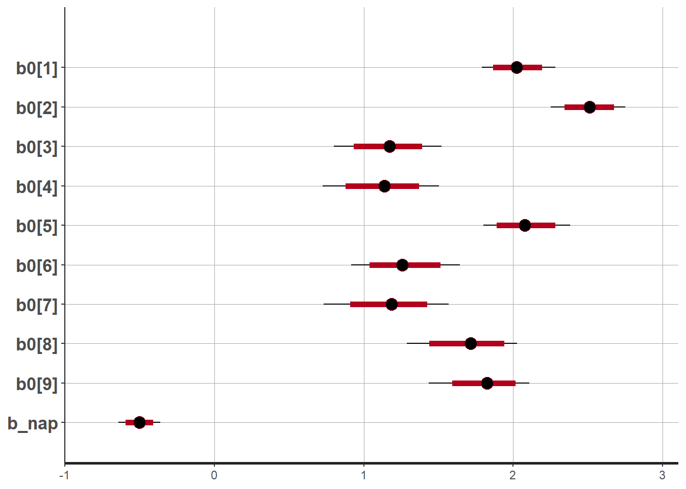
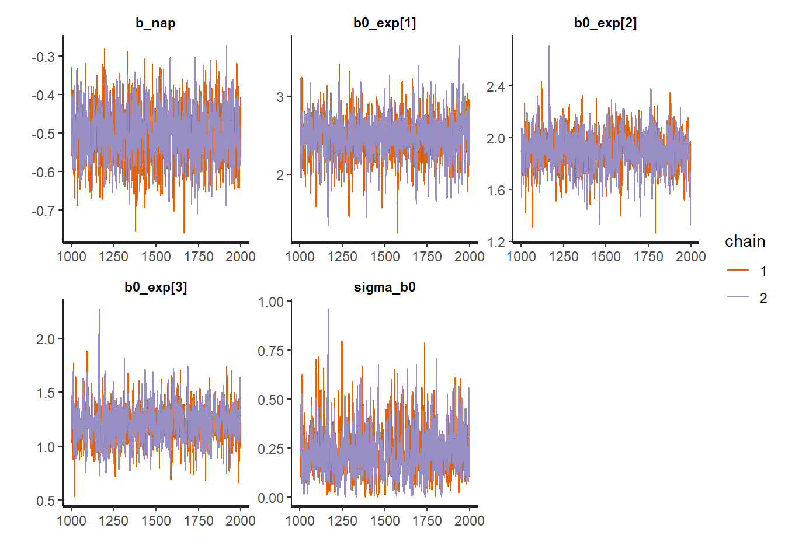

Hierarchical Bayesian models
In this laboratory, we will see how to write a hierarchical Bayesian model in the Stan language.
Data
As in the example using brms in the course notes, we will use the rikz dataset.
rikz <- read.csv("../donnees/rikz.csv")
head(rikz)## Sample Richness Exposure NAP Beach
## 1 1 11 10 0.045 1
## 2 2 10 10 -1.036 1
## 3 3 13 10 -1.336 1
## 4 4 11 10 0.616 1
## 5 5 10 10 -0.684 1
## 6 6 8 8 1.190 2Creating a Stan model
In RStudio, select File -> New File -> Stan File. RStudio creates a new Stan code file that already contains a sample template. Save the file with the extension .stan (e.g. radon.stan) before continuing.
First, notice that the // symbol is used to denote comments in Stan, unlike R which uses # for the same purpose. Except for these comments, the Stan file created contains three blocks.
data: Defines the variables that will be supplied to the model as input data.parameters: Defines the variables which must be estimated by the model.model: Defines the statistical model for the data according to the parameters.
Most Stan models use at least these three blocks, although other blocks are possible: functions, transformed data, transformed parameters and generated quantities. As in R, the blocks are delimited by curly braces {}.
The model block contains only one instruction, y ~ normal(mu, sigma);, which indicates that y follows a normal distribution with mean mu and standard deviation sigma. In Stan, the symbol ~ is used to assign a certain probability distribution to a variable (unlike R where this symbol is used to relate the response of a model to the predictors).
Note: In Stan, all instructions must end with a semicolon ;, except those that start a block (like model).
Declaration of variables
Unlike R, all the variables appearing in a Stan model must first be “declared”. The first line of data, int<lower=0> N; declares the variable N which is an integer (type int) taking a minimum value of 0. It is important to differentiate the integer variables from variables that can take any real value (type real). The specification of lower or upper bounds is optional for the data elements, but they allow Stan to produce an error if the data supplied to the input does not respect these bounds. In this case, the lower bound should probably be 1 since the data contains at least 1 observation.
The second line of data, vector[N] y; declares the variable y as a vector of N elements. Note that it was important to declare N before using it in the declaration of y. Vectors in Stan work similar to R, except that they can only be composed of real numbers (we will see later how to define the equivalent of a vector for integers).
The parameters block declares two real variables, mu and sigma, the second being constrained to be greater than or equal to 0. It is important to define the minimum and maximum possible values for the parameters, otherwise Stan could try to example of assigning a negative value to sigma, which would generate an error when used as the standard deviation of the normal distribution in the model.
Vectorization
Since y is a vector ofN elements, while mu and sigma each contain a single value, the instruction y ~ normal (mu, sigma); in the model block indicates that each element of y follows the normal distribution with parametersmu and sigma. In a linear regression model for example, mu would also be a vector of size N, so the same instruction would associate each y with the corresponding mu, while all the elements would share the same sigma.
Representating the model for the rikz dataset
Poisson regression
Let’s now modify the program to represent our model for the rikz dataset. Let’s start by describing a Poisson regression of the species richness as a function of the NAP, ignoring the effect of the exposure index and the random effect of the beach.
It is preferable to give the variables more descriptive names than x, y or N. In the data block, let’s change N for n_obs (number of observations) and y for richesse (richness), the name of our response variable.
For an integer variable (such as species richness), we cannot define a vector, but rather an array of n_obs elements, as follows: int<lower=0> richesse[n_obs];. Note that in this case, the specification of the number of elements appears after the name of the variable, as opposed to a vector where it appears after the word vector.
We also add the predictor nap which will be a vector of n_obs elements.
Let’s replace the contents of the parameters block by two parameters of our regression, b0 (the intercept) and b_nap (the effect of NAP), both real.
In the model block, we first declare log_lambda as a vector of size n_obs, which will contain the log of the mean prediction for each observation. Variables declared in the model block are often used to define “intermediate” values which are neither model parameters nor data.
We can then specify the equation for the linear predictor:
log_lambda = b0 + b_nap * nap;As in R, this equation is vectorized, i.e. each of the n_obs elements of log_lambda is computed from the corresponding element of nap, whereas b0 and b_nap take only one value.
Finally, we replace the normal distribution for y with a poisson distribution for richesse. Since the only parameter of the Poisson distribution is the exponential of log_lambda, we could write richesse ~ poisson(exp(log_lambda));. However, since Poisson regression with a log link is a common model, Stan offers us a shortcut, the poisson_log function, which defines a Poisson distribution as a function of the log of lambda:
richesse ~ poisson_log(log_lambda);Here is what our model should look like so far:
data {
int<lower=1> n_obs; // Number of observations
int<lower=0> richesse[n_obs]; // Species richness
vector[n_obs] nap;
}
parameters {
real b0;
real b_nap;
}
model {
vector[n_obs] log_lambda;
log_lambda = b0 + b_nap * nap;
richesse ~ poisson_log(log_lambda);
} In the top right corner of the script window, instead of the Run button present for an R script, there is a Check button that allows us to check the syntax of the Stan model.
Vectorization and loops
Integer distribution functions, such as poisson_log, are special because they can be vectorized (each element of richesse follows a distribution according to the corresponding element of log_lambda) even if richesse is not a vector as such. Not all expressions with integer numbers (type “int”) are vectorized in Stan. Without vectorization, a loop would have to be defined with the for instruction, as follows:
for (i in 1:n_obs)
richesse[i] ~ poisson_log(log_lambda[i]);It is a for loop, with a count variable i that will take successively the values from 1 to n_obs. For each value of i, the instructions in the loop are executed, so here richesse[i] follows a Poisson distribution with the parameter log_lambda[i].
In general, the instructions in the loop (the for block) should be delimited by braces {}, but these can be omitted when there is only one instruction.
When vectorization is possible, it allows us to write a model in a more compact way and its execution will also be faster.
Hierarchical model
We can now define the second level of the regression, which is the effect of each beach and its exposure factor on the intercept b0.
First, we need to make some changes to our data in R. In Stan, a categorical variable must be coded as integers from 1 to \(M\), where \(M\) is the number of categories. This is already the case for the variable Beach. However, to represent the variable Exposure as a three-level factor, we will have to convert it first to a factor and then to an integer.
rikz$Exp_cat <- as.integer(as.factor(rikz$Exposure))
head(rikz)## Sample Richness Exposure NAP Beach Exp_cat
## 1 1 11 10 0.045 1 2
## 2 2 10 10 -1.036 1 2
## 3 3 13 10 -1.336 1 2
## 4 4 11 10 0.616 1 2
## 5 5 10 10 -0.684 1 2
## 6 6 8 8 1.190 2 1The values 8, 10 and 11 of Exposure correspond to 1, 2 and 3 in the new variable Exp_cat.
Then we create a separate dataset for the beach-level data. The distinct function of dplyr keeps the unique combinations of Beach and Exp_cat present in the rikz dataset.
library(dplyr)
plages <- distinct(rikz, Beach, Exp_cat) %>%
arrange(Beach)
plages## Beach Exp_cat
## 1 1 2
## 2 2 1
## 3 3 3
## 4 4 3
## 5 5 2
## 6 6 3
## 7 7 3
## 8 8 2
## 9 9 2It is prudent to order this second dataset by beach number, so that the values of the variable Exp_cat are given to Stan in the correct order.
We are now ready to modify the Stan program. Under data, we need to declare the following variables:
int<lower=1> n_plages;which will denote the number of beaches (plages) present in the data set;int<lower=1, upper=n_plages> plage [n_obs];, a table containing for each observation the number of the corresponding beach;int<lower=1> n_exp;, the number of levels of the exposure index;int<lower=1, upper = n_exp> exposure[n_plages];, a table containing the level of the exposure index for each beach (thus the variableExp_catabove).
In the parameters block, the intercept of the model, b0, is now a vector of n_plages values, and we need to add the following parameters: b0_exp, a vector containing the mean intercept for each value of exposure, and sigma_b0, a real parameter with a lower bound of 0, representing the standard deviation of b0 among beaches.
Finally, in the model block, we add the equation for the regression of b0 for each beach, which follows a normal distribution with a mean equal to the b0_exp corresponding to its exposure index, and the standard deviation of sigma_b0.
b0 ~ normal(b0_exp[exposure], sigma_b0);Note that this expression is a shortcut for the following loop:
for (i in 1:n_plages)
b0[i] ~ normal(b0_exp[exposure[i]], sigma_b0);For example, for the first beach i = 1, we take the value exposure[1], which is equal to 2, then we take b0_exp[2] as the mean intercept for this beach.
Note: For this model, the beach random effect b0 is an intermediate value that we could have defined in the parameters or model block. The difference is that when the program exits, Stan will provide estimates of the posterior distribution for variables defined in parameters, but not those defined in model.
In the equation for log_lambda, the value b0 must be replaced by the specific value for the corresponding beach:
log_lambda = b0[plage] + b_nap * nap;
Once again, it is a shortcut replacing the loop:
for (i in 1:n_obs)
log_lambda[i] = b0[plage[i]] + b_nap * nap[i];Prior distributions
This model contains three parameters currently without a distribution: b_nap, b0_exp (a vector of three values) and sigma_b0. If we do not specify prior distributions for these parameters, Stan chooses extremely diffuse prior distributions within the specified bounds, which produce estimates equivalent to the maximum likelihood. This works if we have a lot of data, but as we have seen in the course, it is recommended in the Bayesian approach to choose prior distributions that establish weak constraints on the value of our parameters.
We will use the same prior distributions as the example using brms in the course notes:
b_nap ~ normal(0, 1);
b0_exp ~ normal(2, 1);
sigma_b0 ~ normal(0, 0.5);Note that the three values of b0_exp have the same prior distribution as the original intercept in the course notes. Using brms, the model is parameterized differently for the categorical predictor exposure (with contrasts, as in R). Here we fit an intercept for each exposure value, rather than an intercept for the reference level and contrasts for the differences between that reference level and the other two levels.
Note: Here, the response (on the log scale) and the sole numerical predictor (NAP) take values on a scale of a few units. If the numerical variables in the problem have orders of magnitude very different from each other, it may be useful to standardize them, for example with `scale’ in R, because the Bayesian inference algorithm works best if all variables have comparable scales, rather than having very large and very small values.
Here is the program obtained so far:
data {
int<lower=1> n_obs; // Number of observations
int<lower=1> n_plages; // Number of beaches
int<lower=0> richesse[n_obs]; // Species richness
vector[n_obs] nap;
int<lower=1, upper=n_plages> plage[n_obs]; // Beach corresponding to each observation
int<lower=1> n_exp; // Number of values of the exposure index
int<lower=1, upper = n_exp> exposure[n_plages];
}
parameters {
vector[n_plages] b0;
real b_nap;
vector[n_exp] b0_exp; // Mean intercept for each level of exposure
real<lower=0> sigma_b0; // Standard deviation of the intercept
}
model {
vector[n_obs] log_lambda;
b_nap ~ normal(0, 1);
b0_exp ~ normal(2, 1);
sigma_b0 ~ normal(0, 0.5);
b0 ~ normal(b0_exp[exposure], sigma_b0);
log_lambda = b0[plage] + b_nap * nap;
richesse ~ poisson_log(log_lambda);
} Fitting the model in R
To fit a model written in Stan, we use the rstan package.
library(rstan)First, we create a data list that will contain each variable included in the data block of the model. It is important that the name of the element in the list (before each =) is the same as the name of the variable in the Stan code. For example, here we get n_obs from the number of rows in the rikz dataset, richesse from the rikz$Richness column, etc.
rikz_dat <- list(
n_obs = nrow(rikz),
n_plages = nrow(plages),
richesse = rikz$Richness,
nap = rikz$NAP,
plage = rikz$Beach,
n_exp = max(plages$Exp_cat),
exposure = plages$Exp_cat
)Then, fitting the model using the Monte Carlo algorithm is done in two steps. First, we compile the Stan program into a rikz_mod object with stan_model, then we fit this model with our rikz_dat data with sampling. We specify a number of chains (2) smaller than the default value of 4, but we keep the other default values (2000 iterations, including 1000 warmup).
The sampling function displays its progress for each chain. Here, after the compilation which takes a few minutes, the fit itself is done very quickly.
rikz_mod <- stan_model("rikz.stan")
rikz_res <- sampling(rikz_mod, data = rikz_dat, chains = 2)##
## SAMPLING FOR MODEL 'rikz' NOW (CHAIN 1).
## Chain 1:
## Chain 1: Gradient evaluation took 0 seconds
## Chain 1: 1000 transitions using 10 leapfrog steps per transition would take 0 seconds.
## Chain 1: Adjust your expectations accordingly!
## Chain 1:
## Chain 1:
## Chain 1: Iteration: 1 / 2000 [ 0%] (Warmup)
## Chain 1: Iteration: 200 / 2000 [ 10%] (Warmup)
## Chain 1: Iteration: 400 / 2000 [ 20%] (Warmup)
## Chain 1: Iteration: 600 / 2000 [ 30%] (Warmup)
## Chain 1: Iteration: 800 / 2000 [ 40%] (Warmup)
## Chain 1: Iteration: 1000 / 2000 [ 50%] (Warmup)
## Chain 1: Iteration: 1001 / 2000 [ 50%] (Sampling)
## Chain 1: Iteration: 1200 / 2000 [ 60%] (Sampling)
## Chain 1: Iteration: 1400 / 2000 [ 70%] (Sampling)
## Chain 1: Iteration: 1600 / 2000 [ 80%] (Sampling)
## Chain 1: Iteration: 1800 / 2000 [ 90%] (Sampling)
## Chain 1: Iteration: 2000 / 2000 [100%] (Sampling)
## Chain 1:
## Chain 1: Elapsed Time: 0.152 seconds (Warm-up)
## Chain 1: 0.122 seconds (Sampling)
## Chain 1: 0.274 seconds (Total)
## Chain 1:
##
## SAMPLING FOR MODEL 'rikz' NOW (CHAIN 2).
## Chain 2:
## Chain 2: Gradient evaluation took 0 seconds
## Chain 2: 1000 transitions using 10 leapfrog steps per transition would take 0 seconds.
## Chain 2: Adjust your expectations accordingly!
## Chain 2:
## Chain 2:
## Chain 2: Iteration: 1 / 2000 [ 0%] (Warmup)
## Chain 2: Iteration: 200 / 2000 [ 10%] (Warmup)
## Chain 2: Iteration: 400 / 2000 [ 20%] (Warmup)
## Chain 2: Iteration: 600 / 2000 [ 30%] (Warmup)
## Chain 2: Iteration: 800 / 2000 [ 40%] (Warmup)
## Chain 2: Iteration: 1000 / 2000 [ 50%] (Warmup)
## Chain 2: Iteration: 1001 / 2000 [ 50%] (Sampling)
## Chain 2: Iteration: 1200 / 2000 [ 60%] (Sampling)
## Chain 2: Iteration: 1400 / 2000 [ 70%] (Sampling)
## Chain 2: Iteration: 1600 / 2000 [ 80%] (Sampling)
## Chain 2: Iteration: 1800 / 2000 [ 90%] (Sampling)
## Chain 2: Iteration: 2000 / 2000 [100%] (Sampling)
## Chain 2:
## Chain 2: Elapsed Time: 0.158 seconds (Warm-up)
## Chain 2: 0.281 seconds (Sampling)
## Chain 2: 0.439 seconds (Total)
## Chain 2:## Warning: There were 20 divergent transitions after warmup. See
## http://mc-stan.org/misc/warnings.html#divergent-transitions-after-warmup
## to find out why this is a problem and how to eliminate them.## Warning: Examine the pairs() plot to diagnose sampling problemsHere, Stan warns us that there are several divergent transitions in the sampling period, so the validity of the inferences could be compromised. To diagnose this problem, it may be useful to launch the interactive application ShinyStan, from the package of the same name. Note that the ShinyStan application is also compatible with the output of a model fitted with brms.
library(shinystan)
launch_shinystan(rikz_res)For now, we are focusing on the Diagnose tab of the application. You can see the distribution of a variable for each iteration and the values corresponding to the divergent iterations are given by red points. In particular, if you choose the variable sigma_b0, you will see that divergences occur for small values of sigma_b0.
Non-centered parameterization
In the model above, we asked Stan to estimate both the random effects b0 of each beach, as well as their standard deviation sigma_b0. At the level of the algorithm, the dependence between these quantities can be problematic. Briefly, this is due to the fact that when the standard deviation sigma_b0 is very small, even very small deviations of b0 around their mean value become unlikely; thus the likelihood gradients are very steep and the Markov chain cannot progress normally.
It is therefore recommended to use a so-called “non-centered” parameterization for random effects in Stan. In other words, if the intercept of a group \(j\) is drawn from a normal distribution with a mean \(\mu_{\beta_0}\) and a standard deviation \(\sigma_{\beta_0}\):
\[\beta_{0j} \sim \text{N}(\mu_{\beta_0}, \sigma_{\beta_0})\]
we can represent the same model as follows:
\[\beta_{0j} = \mu_{\beta_0} + \sigma_{\beta_0} \nu_j\]
where \(\nu_j \sim \text{N}(0, 1)\) is a standard normal random variable. Since the random effects \(\nu_j\) are represented in multiples of \(\sigma_{\beta_0}\), these two parameters are therefore decoupled.
In the code below, we used the variable b0_alea for \(\nu_j\). Since b0 is now a value that depends entirely on a combination of other parameters and data, we can define it in a new transformed parameters block. The distribution of the variables in this block, like those in parameters, will be given by Stan at the output of the program.
data {
int<lower=1> n_obs; // Number of observations
int<lower=1> n_plages; // Number of beaches
int<lower=0> richesse[n_obs]; // Species richness
vector[n_obs] nap;
int<lower=1, upper=n_plages> plage[n_obs]; // Beach corresponding to each observation
int<lower=1> n_exp; // Number of levels of the exposure index
int<lower=1, upper = n_exp> exposure[n_plages];
}
parameters {
vector[n_plages] b0_alea; // Standardized random effect on the intercept
real b_nap;
vector[n_exp] b0_exp; // Mean intercept for each exposure level
real<lower=0> sigma_b0; // Standard deviation of the intercept
}
transformed parameters {
vector[n_plages] b0;
b0 = b0_exp[exposure] + sigma_b0 * b0_alea;
}
model {
vector[n_obs] log_lambda;
b_nap ~ normal(0, 1);
b0_exp ~ normal(2, 1);
sigma_b0 ~ normal(0, 0.5);
b0_alea ~ normal(0, 1);
log_lambda = b0[plage] + b_nap * nap;
richesse ~ poisson_log(log_lambda);
} When fitting this new version of the model, divergences are eliminated or at least reduced. (In this particular example where the posterior distribution of sigma_b0 is approaching 0, it may be necessary to increase adapt_delta, as seen in the example in the course notes, to completely eliminate the divergences.)
# new version of the model in the file "rikz2.stan"
rikz_mod2 <- stan_model("rikz2.stan")
rikz_res2 <- sampling(rikz_mod2, data = rikz_dat, chains = 2)##
## SAMPLING FOR MODEL 'rikz2' NOW (CHAIN 1).
## Chain 1:
## Chain 1: Gradient evaluation took 0 seconds
## Chain 1: 1000 transitions using 10 leapfrog steps per transition would take 0 seconds.
## Chain 1: Adjust your expectations accordingly!
## Chain 1:
## Chain 1:
## Chain 1: Iteration: 1 / 2000 [ 0%] (Warmup)
## Chain 1: Iteration: 200 / 2000 [ 10%] (Warmup)
## Chain 1: Iteration: 400 / 2000 [ 20%] (Warmup)
## Chain 1: Iteration: 600 / 2000 [ 30%] (Warmup)
## Chain 1: Iteration: 800 / 2000 [ 40%] (Warmup)
## Chain 1: Iteration: 1000 / 2000 [ 50%] (Warmup)
## Chain 1: Iteration: 1001 / 2000 [ 50%] (Sampling)
## Chain 1: Iteration: 1200 / 2000 [ 60%] (Sampling)
## Chain 1: Iteration: 1400 / 2000 [ 70%] (Sampling)
## Chain 1: Iteration: 1600 / 2000 [ 80%] (Sampling)
## Chain 1: Iteration: 1800 / 2000 [ 90%] (Sampling)
## Chain 1: Iteration: 2000 / 2000 [100%] (Sampling)
## Chain 1:
## Chain 1: Elapsed Time: 0.211 seconds (Warm-up)
## Chain 1: 0.181 seconds (Sampling)
## Chain 1: 0.392 seconds (Total)
## Chain 1:
##
## SAMPLING FOR MODEL 'rikz2' NOW (CHAIN 2).
## Chain 2:
## Chain 2: Gradient evaluation took 0 seconds
## Chain 2: 1000 transitions using 10 leapfrog steps per transition would take 0 seconds.
## Chain 2: Adjust your expectations accordingly!
## Chain 2:
## Chain 2:
## Chain 2: Iteration: 1 / 2000 [ 0%] (Warmup)
## Chain 2: Iteration: 200 / 2000 [ 10%] (Warmup)
## Chain 2: Iteration: 400 / 2000 [ 20%] (Warmup)
## Chain 2: Iteration: 600 / 2000 [ 30%] (Warmup)
## Chain 2: Iteration: 800 / 2000 [ 40%] (Warmup)
## Chain 2: Iteration: 1000 / 2000 [ 50%] (Warmup)
## Chain 2: Iteration: 1001 / 2000 [ 50%] (Sampling)
## Chain 2: Iteration: 1200 / 2000 [ 60%] (Sampling)
## Chain 2: Iteration: 1400 / 2000 [ 70%] (Sampling)
## Chain 2: Iteration: 1600 / 2000 [ 80%] (Sampling)
## Chain 2: Iteration: 1800 / 2000 [ 90%] (Sampling)
## Chain 2: Iteration: 2000 / 2000 [100%] (Sampling)
## Chain 2:
## Chain 2: Elapsed Time: 0.226 seconds (Warm-up)
## Chain 2: 0.217 seconds (Sampling)
## Chain 2: 0.443 seconds (Total)
## Chain 2:Exploring the results
The result produced by sampling is a stanfit type object. Here are some of the functions that apply to these objects.
The check_hmc_diagnostics function checks the three diagnostics of the Hamiltonian Monte Carlo method.
check_hmc_diagnostics(rikz_res2)##
## Divergences:## 0 of 2000 iterations ended with a divergence.##
## Tree depth:## 0 of 2000 iterations saturated the maximum tree depth of 10.##
## Energy:## E-BFMI indicated no pathological behavior.The show function shows a summary of the posterior distribution of each parameter.
show(rikz_res2)## Inference for Stan model: rikz2.
## 2 chains, each with iter=2000; warmup=1000; thin=1;
## post-warmup draws per chain=1000, total post-warmup draws=2000.
##
## mean se_mean sd 2.5% 25% 50% 75% 97.5% n_eff Rhat
## b0_alea[1] 0.53 0.02 0.77 -0.99 0.05 0.54 1.00 2.11 1309 1
## b0_alea[2] 0.09 0.03 0.97 -1.78 -0.54 0.07 0.72 1.98 1421 1
## b0_alea[3] -0.16 0.02 0.81 -1.78 -0.70 -0.16 0.36 1.45 1601 1
## b0_alea[4] -0.30 0.02 0.83 -1.90 -0.85 -0.32 0.28 1.38 1810 1
## b0_alea[5] 0.77 0.02 0.78 -0.77 0.25 0.76 1.29 2.33 1432 1
## b0_alea[6] 0.26 0.02 0.82 -1.37 -0.25 0.25 0.80 1.90 1624 1
## b0_alea[7] -0.11 0.02 0.84 -1.77 -0.69 -0.12 0.47 1.60 2172 1
## b0_alea[8] -0.91 0.02 0.81 -2.51 -1.45 -0.92 -0.36 0.60 1568 1
## b0_alea[9] -0.42 0.02 0.78 -1.91 -0.94 -0.45 0.06 1.17 1576 1
## b_nap -0.50 0.00 0.07 -0.64 -0.55 -0.50 -0.45 -0.36 1619 1
## b0_exp[1] 2.48 0.01 0.27 1.88 2.33 2.49 2.64 3.03 1132 1
## b0_exp[2] 1.91 0.00 0.15 1.60 1.82 1.92 2.00 2.19 931 1
## b0_exp[3] 1.21 0.01 0.18 0.88 1.09 1.20 1.32 1.59 835 1
## sigma_b0 0.22 0.01 0.13 0.02 0.13 0.21 0.30 0.53 487 1
## b0[1] 2.03 0.00 0.13 1.79 1.94 2.02 2.11 2.28 1738 1
## b0[2] 2.51 0.00 0.13 2.25 2.42 2.51 2.60 2.75 2275 1
## b0[3] 1.17 0.00 0.18 0.80 1.05 1.17 1.29 1.52 3183 1
## b0[4] 1.13 0.00 0.20 0.72 1.01 1.14 1.26 1.50 2035 1
## b0[5] 2.08 0.00 0.15 1.80 1.97 2.08 2.18 2.38 1397 1
## b0[6] 1.27 0.00 0.19 0.91 1.14 1.26 1.39 1.64 2389 1
## b0[7] 1.18 0.00 0.20 0.73 1.06 1.19 1.31 1.57 2972 1
## b0[8] 1.70 0.01 0.19 1.29 1.58 1.72 1.84 2.03 982 1
## b0[9] 1.81 0.00 0.17 1.44 1.72 1.83 1.93 2.11 1933 1
## lp__ 243.83 0.18 3.15 236.95 241.97 244.12 246.12 248.95 296 1
##
## Samples were drawn using NUTS(diag_e) at Tue Feb 09 05:49:36 2021.
## For each parameter, n_eff is a crude measure of effective sample size,
## and Rhat is the potential scale reduction factor on split chains (at
## convergence, Rhat=1).The extract function extracts all samples from the posterior distribution of the parameters.
rikz_pars <- extract(rikz_res2)
str(rikz_pars)## List of 6
## $ b0_alea : num [1:2000, 1:9] 1.028 -1.174 1.093 -0.085 1.244 ...
## ..- attr(*, "dimnames")=List of 2
## .. ..$ iterations: NULL
## .. ..$ : NULL
## $ b_nap : num [1:2000(1d)] -0.468 -0.585 -0.374 -0.406 -0.498 ...
## ..- attr(*, "dimnames")=List of 1
## .. ..$ iterations: NULL
## $ b0_exp : num [1:2000, 1:3] 2.68 2.66 2.5 2.36 2.33 ...
## ..- attr(*, "dimnames")=List of 2
## .. ..$ iterations: NULL
## .. ..$ : NULL
## $ sigma_b0: num [1:2000(1d)] 0.00242 0.18054 0.16915 0.09995 0.1935 ...
## ..- attr(*, "dimnames")=List of 1
## .. ..$ iterations: NULL
## $ b0 : num [1:2000, 1:9] 2.1 1.87 2.2 1.97 2 ...
## ..- attr(*, "dimnames")=List of 2
## .. ..$ iterations: NULL
## .. ..$ : NULL
## $ lp__ : num [1:2000(1d)] 236 240 243 245 245 ...
## ..- attr(*, "dimnames")=List of 1
## .. ..$ iterations: NULLThe plot function, by default, shows a graph of the estimates for the parameters given by the pars argument, with their credibility interval at 80% (bold line) and 95% (thinner line).
plot(rikz_res2, pars = c("b0", "b_nap"))## ci_level: 0.8 (80% intervals)## outer_level: 0.95 (95% intervals)
Other graphs can be produced by varying the plotfun argument, such as trace plots for the two Monte Carlo chains, or histograms of the posterior distribution of the parameters.
plot(rikz_res2, pars = c("b_nap", "b0_exp", "sigma_b0"),
plotfun = "trace")
plot(rikz_res2, pars = c("b_nap", "b0_exp", "sigma_b0"),
plotfun = "hist")## `stat_bin()` using `bins = 30`. Pick better value with `binwidth`.
As seen earlier, launch_shinystan launches an interactive application to view model diagnostics, summaries and graphs of the posterior distribution of parameters, as well as other aspects of the fitted model.
Using the brms package
The brms package allows us to implement several models without writing the Stan code ourselves. It is recommended to use it whenever possible, because brms automatically takes care of optimizing the Stan code, for example standardizing the predictors, adopting a non-centered parameterization, etc.
References
Documentation for Stan: https://mc-stan.org/users/documentation/
Introduction to Stan by Michael Betancourt: https://betanalpha.github.io/assets/case_studies/stan_intro.html